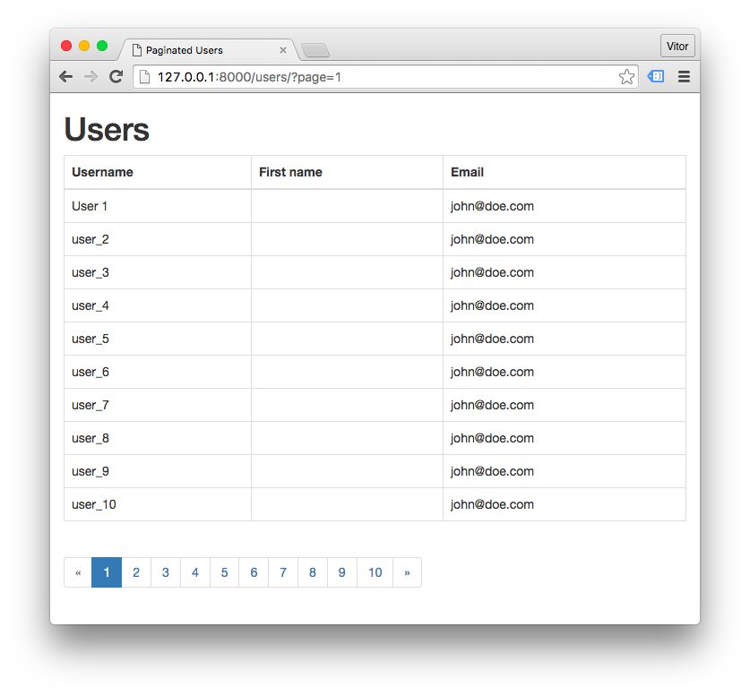

(Picture:
(Picture: As part of the Django’s common Web application tools, Django offers a few classes to manage paginated data. You can pass either a list/tuple of objects or an QuerySet. In this tutorial I will show how to paginate data using function based views and how to paginate using class-based views (ListView).
The Paginator
The paginator classes lives in django.core.paginator. We will be working mostly with the Paginator and Page
classes.
Consider the auth.User table has 53 user instances.
from django.contrib.auth.models import User
from django.core.paginator import Paginator
user_list = User.objects.all()
paginator = Paginator(user_list, 10)In the example above I’m telling Paginator to paginate the user_list QuerySet in pages of 10. This will create
a 6 pages result. The first 5 pages with 10 users each and the last page with 3 users.
Debugging the Paginator Object
| Input | Output | Type |
|---|---|---|
| paginator.count | 53 | <type 'int'> |
| paginator.num_pages | 6 | <type 'int'> |
| paginator.page_range | xrange(1, 7) | <type 'xrange'> |
| paginator.page(2) | <Page 2 of 6> | <class 'django.core.paginator.Page'> |
The Paginator.page() method will return a given page of the paginated results, which is an instance of Page. This
is what we will return to the template.
users = paginator.page(2)Debugging the Page Object
| Input | Output | Type |
|---|---|---|
| users | <Page 2 of 6> | <class 'django.core.paginator.Page'> |
| users.has_next() | True | <type 'bool'> |
| users.has_previous() | True | <type 'bool'> |
| users.has_other_pages() | True | <type 'bool'> |
| users.next_page_number() | 3 | <type 'int'> |
| users.previous_page_number() | 1 | <type 'int'> |
| users.start_index() | 11 | <type 'int'> |
| users.end_index() | 20 | <type 'int'> |
The Page.next_page_number() and Page.previous_page_number() methods raises InvalidPage if next/previous page
doesn’t exist.
The Page.start_index() and Page.end_index() are relative to the page number.
>>> users = paginator.page(6) # last page
<Page 6 of 6>
>>> users.start_index()
51
>>> users.end_index()
53The process is basically done by querying the database, then pass the QuerySet to the Paginator, grab a Page and return to the template. The rest is done in the template.
Let’s see now some practical examples.
Pagination with Function-Based Views
views.py
from django.contrib.auth.models import User
from django.core.paginator import Paginator, EmptyPage, PageNotAnInteger
def index(request):
user_list = User.objects.all()
page = request.GET.get('page', 1)
paginator = Paginator(user_list, 10)
try:
users = paginator.page(page)
except PageNotAnInteger:
users = paginator.page(1)
except EmptyPage:
users = paginator.page(paginator.num_pages)
return render(request, 'core/user_list.html', { 'users': users })user_list.html
<table class="table table-bordered">
<thead>
<tr>
<th>Username</th>
<th>First name</th>
<th>Email</th>
</tr>
</thead>
<tbody>
{% for user in users %}
<tr>
<td>{{ user.username }}</td>
<td>{{ user.first_name }}</td>
<td>{{ user.email }}</td>
</tr>
{% endfor %}
</tbody>
</table>
{% if users.has_other_pages %}
<ul class="pagination">
{% if users.has_previous %}
<li><a href="?page={{ users.previous_page_number }}">«</a></li>
{% else %}
<li class="disabled"><span>«</span></li>
{% endif %}
{% for i in users.paginator.page_range %}
{% if users.number == i %}
<li class="active"><span>{{ i }} <span class="sr-only">(current)</span></span></li>
{% else %}
<li><a href="?page={{ i }}">{{ i }}</a></li>
{% endif %}
{% endfor %}
{% if users.has_next %}
<li><a href="?page={{ users.next_page_number }}">»</a></li>
{% else %}
<li class="disabled"><span>»</span></li>
{% endif %}
</ul>
{% endif %}The result is something like this:

The example above is using Bootstrap 3.
Pagination with Class-Based Views
views.py
class UserListView(ListView):
model = User
template_name = 'core/user_list.html' # Default: <app_label>/<model_name>_list.html
context_object_name = 'users' # Default: object_list
paginate_by = 10
queryset = User.objects.all() # Default: Model.objects.all()user_list.html
<table class="table table-bordered">
<thead>
<tr>
<th>Username</th>
<th>First name</th>
<th>Email</th>
</tr>
</thead>
<tbody>
{% for user in users %}
<tr>
<td>{{ user.username }}</td>
<td>{{ user.first_name }}</td>
<td>{{ user.email }}</td>
</tr>
{% endfor %}
</tbody>
</table>
{% if is_paginated %}
<ul class="pagination">
{% if page_obj.has_previous %}
<li><a href="?page={{ page_obj.previous_page_number }}">«</a></li>
{% else %}
<li class="disabled"><span>«</span></li>
{% endif %}
{% for i in paginator.page_range %}
{% if page_obj.number == i %}
<li class="active"><span>{{ i }} <span class="sr-only">(current)</span></span></li>
{% else %}
<li><a href="?page={{ i }}">{{ i }}</a></li>
{% endif %}
{% endfor %}
{% if page_obj.has_next %}
<li><a href="?page={{ page_obj.next_page_number }}">»</a></li>
{% else %}
<li class="disabled"><span>»</span></li>
{% endif %}
</ul>
{% endif %} Django Tips #22 Designing Better Models
Django Tips #22 Designing Better Models
 A Complete Beginner's Guide to Django - Part 2
A Complete Beginner's Guide to Django - Part 2
 How to Create Infinite Scroll With Django
How to Create Infinite Scroll With Django
 How to Extend Django User Model
How to Extend Django User Model
 How to Setup a SSL Certificate on Nginx for a Django Application
How to Setup a SSL Certificate on Nginx for a Django Application
 How to Deploy a Django Application to Digital Ocean
How to Deploy a Django Application to Digital Ocean